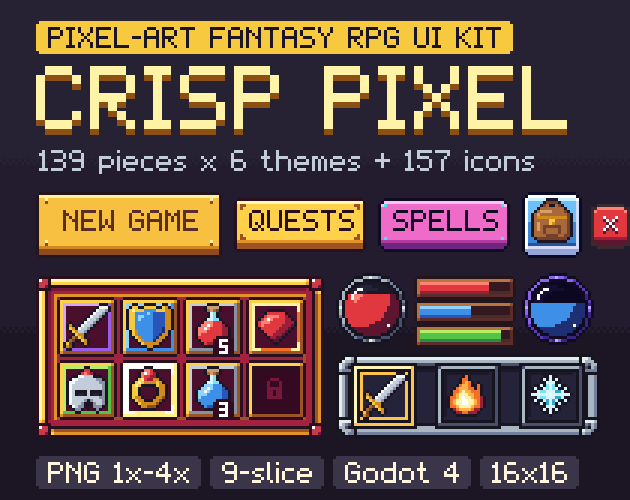

Crisp Pixel: pixel-art fantasy RPG UI kit with 6 themes and 157 icons
Crisp Pixel is a pixel-art fantasy RPG UI kit: 139 pieces in each of 6 themes (Oak & Brass, Stone & Ember, Parchment & Ink, Royal Gold, Arcane, Classic Blue) and 157 colour icons at 16 x 16. It is true pixel art on a 16 px grid (no anti-aliasing, 1 px outlines, a 16-colour palette per theme) and comes as PNG at 1x, 2x, 3x and 4x with 9-slice borders listed, sprite sheets, two pixel fonts and ready-made Godot 4 themes.

- Contents
- 991 sprites: 139 pieces x 6 themes, 157 colour icons at 16 x 16
- Formats
- PNG 1x, 2x, 3x and 4x, sprite sheets, sheets.json, 2 pixel fonts, Godot 4 themes
- Price
- $6.99 on itch.io (anipixels.itch.io/crisp-pixel)
- Free sampler
- 53 pieces, free on itch.io (anipixels.itch.io/crisp-pixel-free)
- Licence
- Royalty-free for commercial and non-commercial projects, no credit required, no reselling or redistribution of the files
- Made by
- Anipixels, with procedural code written with an AI assistant (Claude)
What is included
- 834 themed pieces: 139 per theme in 6 themes, with the same file names and sizes in every theme so you can swap a whole look.
- The themes are different drawings, not recolours: each has its own corner shape, frame and corner ornaments (brass brackets on walnut, stone cornerstones with studs, ink marks and a curled corner on parchment, jewels in a gold frame, glowing arcane runes, and the classic blue window with a white border).
- Per theme: buttons (33), panels (8), dialogue (5), inventory (18), hotbar (9), bars (13), quest (5), tabs (4), toggles (7), sliders (5), scrollbar (3), inputs (7), banners (4), dividers (3), hud (11), texture (1), cursors (3).
- Buttons in large, medium, small and square sizes plus a secondary style and a round button, each with normal, hover, pressed and disabled states; close, arrow, plus and minus buttons.
- Panels and windows: panel, inset panel, ornate panel, window with a title bar, title plate, two hollow frames, tooltip.
- Dialogue: dialogue box, name plate, continue arrow, choice rows (normal and selected).
- Inventory: 20 px slots with a 16 px icon area: empty, hover, selected, locked, five rarity borders (common, uncommon, rare, epic, legendary), eight equipment slots with ghost icons (head, chest, hands, feet, weapon, off-hand, ring, amulet) and a stack-count badge.
- Hotbar and skills: hotbar slot (normal and active), tray, round skill slot and ring, three cooldown overlays, hotkey cap.
- Bars and orbs: bar frame, ornate bar frame, thin bar, fills for health, mana, stamina and experience; orb frame, back, gloss and health / mana fills.
- Also: quest tracker rows and header, tabs, check box, radio, switch, slider, scroll bar, text input, dropdown, ribbons, hanging banner, heraldic shield, dividers, round and square minimap frames, three portrait frames, currency plate, level badge, toast, notification dot, list rows, three cursors (pointer, hand, sword) and a seamless background tile.
- 157 colour icons, 16 x 16 with a 1 px outline: weapons (16), armour (12), consumables (17), loot (20), tools (12), magic (10), status (17), map (18), classes (8), interface (27).
- Two pixel fonts drawn for the kit, as .ttf and as PNG glyph strips: Crisp Pixel (5 x 7 capitals, lower case, digits, punctuation) and Crisp Pixel Tiny (3 x 5, for stack counts and key caps). Basic Latin only.
- Sprite sheets: one sheet per theme and one for the icons at every scale, each with a .json of frame rectangles and borders.
- Palette files: .hex and .gpl for every theme, for the icons and for the whole kit.
- Godot 4 project: one Theme resource per theme (for 1x, 2x, 3x and 4x textures) that styles Button, CheckBox, CheckButton, ProgressBar, HSlider, LineEdit, OptionButton, TabContainer, panels, tooltips and more, with type variations for the extra shapes (slots, rarity borders, window, dialogue box, hotbar...), and a demo scene with nearest-neighbour filtering.
Details
- 3964 PNG files: 991 sprites, each at 1x, 2x, 3x and 4x. That is 296 different designs (139 themed + 157 icons); the 6 themes multiply the themed ones.
- Base scale: 16 px grid. Slots are 20 px with a 16 px icon area, icons 16 px, buttons 14 to 22 px tall, bars 8 px.
- 81 of the 139 themed pieces are 9-slice / 3-slice. Borders are in sheets.json and in UNITY.txt. Ornaments sit inside the borders and the middles are flat colour, so they stretch or tile cleanly.
- Every pixel is fully opaque or fully transparent. Each theme uses 16 colours; icons, rarity borders and bar fills share a 41-colour palette.
- The 1x files suit 320 x 180 to 640 x 360 games; use 2x, 3x or 4x (or scale 1x in your engine) for larger screens. Use whole-number scales with texture filtering off.
- No piece has lettering baked in.
- Download size: CrispPixel_Full.zip is 4.42 MB.
Formats and engines
- PNG at 1x, 2x, 3x and 4x. The larger sizes are exact enlargements with no smoothing.
- Sprite sheets: one sheet per theme and one for the icons at every scale, each with a .json of frame rectangles and borders.
- sheets.json listing every piece: file paths, size, 9-slice borders, content padding, position on its sprite sheet and notes.
- Two pixel fonts as .ttf and as PNG glyph strips, and palette files (.hex and .gpl) for every theme, for the icons and for the whole kit.
- Godot 4 Theme resources and a demo scene with nearest-neighbour filtering.
Works with: Any engine that loads PNG. Godot 4 (4.3 or newer; themes and demo scene load-tested headless in 4.7) gets ready-made themes. Unity, GameMaker, Construct, Phaser and others use the PNGs or the sprite sheets with their nine-slice feature and the border values from sheets.json. Unity: sprites only, no prefabs and no pre-set borders; UNITY.txt gives the import settings and the border values to type into the Sprite Editor.
Free sampler
The free sampler has 53 pieces as PNG at 1x, 2x, 3x and 4x, with a sheets.json of sizes and 9-slice borders: 35 pieces from the Oak & Brass theme and 18 icons.
The free itch.io page also hosts the playable browser demo of the full pack.
Licence
Use the graphics in any number of commercial or non-commercial projects (games, apps, websites, videos, streams, game jams). Edit, recolour, resize or otherwise modify them. Credit is appreciated but never required. You may not resell, redistribute or give away the graphics themselves, on their own or as part of another asset pack, UI kit or template, modified or not, and you may not claim them as your own original work in an asset pack.
This is a summary of the LICENSE.txt inside the download. The sampler's copy of that file: crisp-pixel.txt.
Questions
Which engines does it work with?
Any engine that loads PNG. Godot 4 gets ready-made themes; Unity, GameMaker, Construct, Phaser and others use the PNGs or the sprite sheets with their nine-slice feature and the border values from sheets.json.
Is it real pixel art?
Yes: it is drawn pixel by pixel on a low-resolution grid, with no smoothing anywhere. Use it at whole-number scales with texture filtering off.
What resolution is it made for?
The 1x files suit 320 x 180 to 640 x 360 games; use 2x, 3x or 4x (or scale 1x in your engine) for larger screens.
Can I mix themes?
Yes. Every theme has the same pieces at the same sizes, so a gold close button drops into a stone window.
Can I recolour it?
Yes. Each theme has a small fixed palette (listed in the palette files), so a palette swap recolours a whole theme.
Is there a smooth, high-resolution version?
Crisp Quest is the sister kit: the same kind of pieces as smooth vector art.
Is there a free version?
Yes: Crisp Pixel Free has 53 pieces to test in your project. The same 53 pieces can be previewed on this site's UI kit preview.
Can I use it in a commercial game, and do I have to give credit?
It is royalty-free for commercial and non-commercial projects and no attribution is needed. You may not resell or redistribute the assets themselves, modified or not.
Was AI used to make it?
Yes, for the code. Every pixel is placed procedurally by code that was written with the help of Claude, an AI assistant. No AI image generators, no traced or third-party art.
Screenshots


How it was made
Every pixel is placed procedurally by code that was written with the help of Claude, an AI assistant. No AI image generators, no traced or third-party art.
Crisp Pixel is part of the Crisp Everything Bundle: all 9 Crisp packs for $14.99 instead of $52.91 bought one by one. View the bundle on itch.io